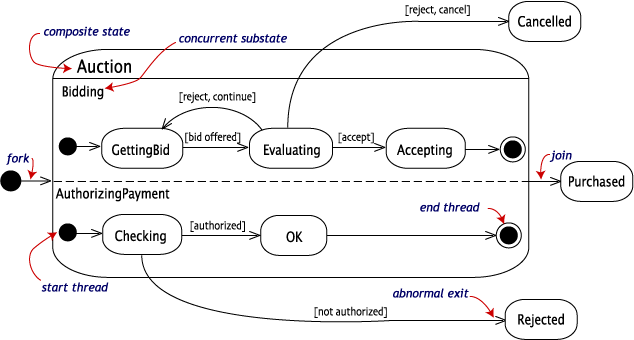

Sequence diagrams, collaboration diagrams, activity diagrams, and statechart diagrams give dynamic views of a model. They let you look inside to the mechanism for action inside the model. Sequence diagrams and collaboration diagrams focus on the messages involved in completing a single process. Statechart diagrams focus attention on a single object. Activity diagrams focus on the flow of activities in performing a single task.
In this page, we will see how to how concurrent activities are modeled in sequence diagrams and state diagrams.
Sequence diagrams with asynchronous messages
A message is asynchronous if it allows its sender to send additional messages while the original is being processed. The timing of an asynchronous message is independent of the timing of the intervening messages.
The following sequence diagram illustrates the action of a nurse requesting a diagnostic test at a medical lab. There are two asynchronous messages from the Nurse: 1) ask the MedicalLab to reserve a date for the test and 2) ask the InsuranceCompany to approve the test. The order in which these messages are sent or completed is irrelevant. If the InsuranceCompany approves the test, then the Nurse will schedule the test on the date supplied by the MedicalLab.
The UML uses the following message conventions.
| Symbol | Meaning |
|---|---|
| simple message which may be synchronous or asynchronous | |
| simple message return (optional) | |
| a synchronous message | |
| an asynchronous message | |
| an asynchronous message return |
Concurrency and statechart diagrams
States in statechart diagrams can be nested. Related states can be grouped together into a single composite state. Nesting states inside others is necessary when an activity involves concurrent subactivities.
The following statechart diagram models an auction with two concurrent substates: processing the bid and authorizing the payment limit.

Entering the Auction requires a fork at the start into two separate start threads. Each substate has an exit state to mark the end of the thread. Unless there is an abnormal exit (Canceled or Rejected), the exit from the composite state occurs when both substates have exited.